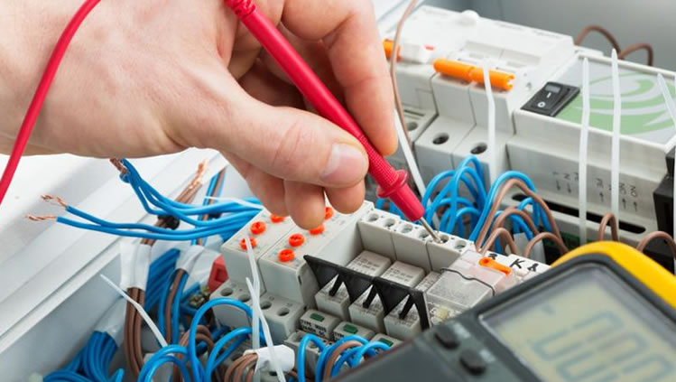

Sistemas y diseño electrónico
En la semana 10 nos hablaron del sistema de control la cual está formado por un conjunto de elementos relacionados entre sí, que ofrecen señales de salida en función de señales o datos de entrada. Entre los tipos de sistemas están el sistema de combinacionales y secuenciales, los sistemas de control dinámico, así como los sistemas en lazo abierto y sistemas en lazo cerrado. Luego vimos el concepto del diseño electrónico la cual es una actividad creativa que permite al individuo transformar o resolver un problema dentro del campo de la electrónica. Por último hablamos del diagrama de flujo, que es una manera de reresentar gráficamente un algoritmo o un proceso de alguna naturaleza, a través de una serie de pasos estructurados y vinculados que permiten su revisión como un todo.
